Nome Científico: Phenakospermum guyannense (Rich.) Endl. ex Miq.
Nome popular: "bananeira brava, sororoca"
Usos: Ornamental. A sororoca é o único representante
da família nativo do Brasil, sendo encontrado na região amazônica.
P. guyannense é polinizada por ao menos duas espécies de
Phyllostomus (Phyllostomidae), morcegos nectarívoros (Kress &;
Stone 1993).
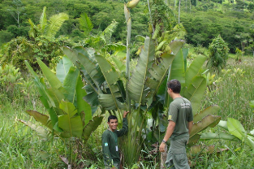
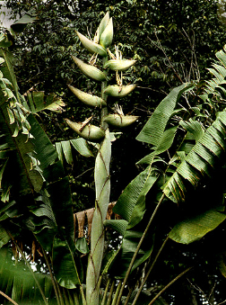
Salsa Paredão
Família: Araceae
Nome Científico: Anthurium bonplandii Bunting
Nome popular: "salsa paredão"
Usos: Ornamental.
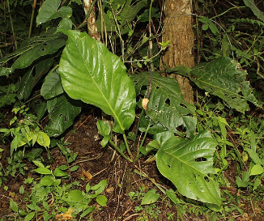
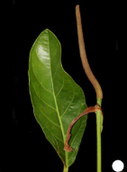
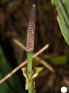
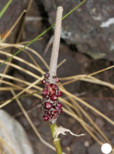
Imbé
Família: Araceae
Nome Científico: Philodendron acutatum Schott.
Nome popular: "imbé"
Usos: Ornamental.
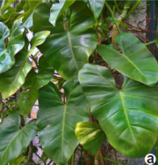
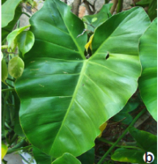
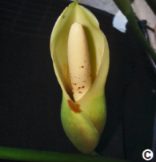
Arumã
Família: Marantaceae
Nome Científico: Ischnosiphon leucophaeus (Poepp. & Endl.) Körn.
Nome popular: "arumã"
Usos: Ornamental.
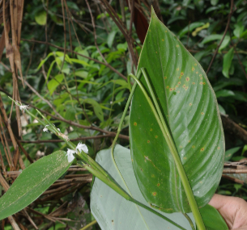
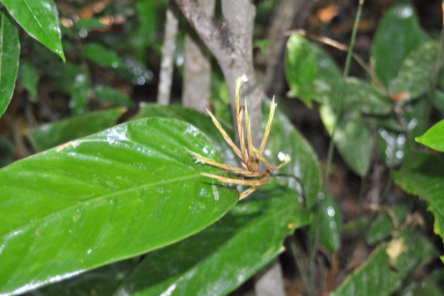
As cerâmicas desta mostra foram feitas ceramista Sônia Chagas.
Sônia tem como fonte de inspiração a fauna e flora do Araguaia e do cerrado.
E tem com referência de criação de suas peças a cerâmica primitiva.